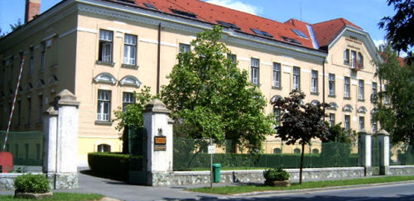

Ismerd meg intézményünk történetét, működését és küldetését.
A Pécsi Tudományegyetem Szent-Györgyi Albert Egészségügyi Technikum és Szakképző Iskola jogelődjét 1945-ben alapították. A fenntartói jogokat 2008 óta a Pécsi Tudományegyetem gyakorolja. Iskolánkban 1995-től érettségire épülő szakképzés folyik, ezt a képzési kínálatot bővítettük az ágazati egészségügy és szociális szakgimnáziumi, valamint a technikumi osztályok indításával.
A Szent-Györgyi Albert Középiskola – mint az évszázados gyökerekkel bíró szombathelyi egészségügyi szakképzés folytatója – 2012-ben a Pécsi Tudományegyetem Szociális és Egészségügyi Szakgimnázium és Szakközépiskola tagintézménye lett.
A 2020/2021-es tanévben már az egyetemi szervezeti keretek között szakmailag újra önállósuló Pécsi Tudományegyetem Szent-Györgyi Albert Egészségügyi Technikum és Szakképző Iskola a pécsi mintára országos kiterjesztést nyert egyetemi fenntartású egészségügyi iskola hálózat egyik tagjaként folytathatja működését.
Az iskola elsődleges küldetése, hogy Szombathely és Vas megye, de a tágabb térség egészségügyi szakintézményei számára is biztosítsa a minőségi szakdolgozói utánpótlást, szoros együttműködésben a gyakorlati képzésben részt vevő kórházakkal és szociális intézményekkel.
Iskolánk egy olyan oktatási modell része, amely a szakképzéstől a doktori fokozatig képes az egészségügyi képzés teljes vertikumát biztosítani, teljes körűen kiszolgálva az egészségügyi ágazat humánerőforrás-igényét.

9700 Szombathely, Jókai Mór u. 14.